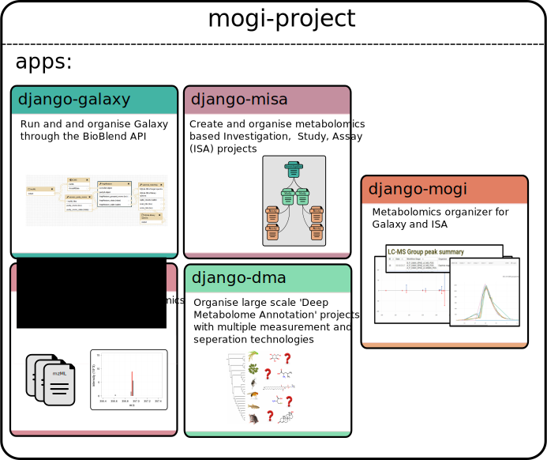

MOGI suite¶
Overview¶
The MOGI suite is a collection of Django applications to manage and organise metabolomic studies using Galaxy, ISA and Django frameworks.
The suite consist of the following reusable applications:
- django-mogi
- django-misa
- django-galaxy
- django-metab
- django-dma
- django-gfiles
General user¶
Information for general user (rather than developer) can be found here: General user docs
Django applications & projects¶
The django-mogi application inherits all of the detailed applications below to create ready to go framework for organising metabolomics studies with Galaxy and ISA. See the example code and an example code for how a Django project utilises the MOGI suite.
However each application has been developed to be reusable to allow for more general functionality to be used in other Django projects and applications.
What the MOGI framework can do¶
- Organise metabolomics studies following ISA standards
- Interface with Galaxy
- Search metabolomics spectra across multiple projects
- Summarise compound annotations across multiple projects
Deep Metabolome Annotation project¶
The primary use of the MOGI suite of application is to manage the data generated for Deep Metabolome Annotation (DMA) projects (large scale untargeted metabolite characterisations). As such the main focus of the management is to record what compound annotations have been observed rather than manage statistically signficant features across multiple studies.
Documentation¶
django-mogi¶
The Galaxy interfaces are divided into mzml2isa-galaxy (covering mzML and imzML) and nmrml2isa-galaxy (covering nmrML)
django-galaxy¶
The command line applications / libraries are currently divided into the mzml2isa package (covering mzML and imzML) and nmrml2isa (covering nmrML).
django-misa¶
The graphical user interfaces are divided into mzmlisa-qt (covering mzML), imzml2isa-qt (covering imzML) and nmrml2isa-qt (covering nmrML).
django-metab¶
The Galaxy interfaces are divided into mzml2isa-galaxy (covering mzML and imzML) and nmrml2isa-galaxy (covering nmrML)
django-dma¶
The Galaxy interfaces are divided into mzml2isa-galaxy (covering mzML and imzML) and nmrml2isa-galaxy (covering nmrML)
django-gfiles¶
The Galaxy interfaces are divided into mzml2isa-galaxy (covering mzML and imzML) and nmrml2isa-galaxy (covering nmrML)